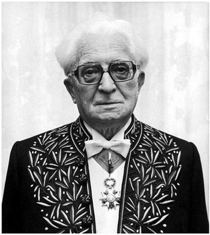
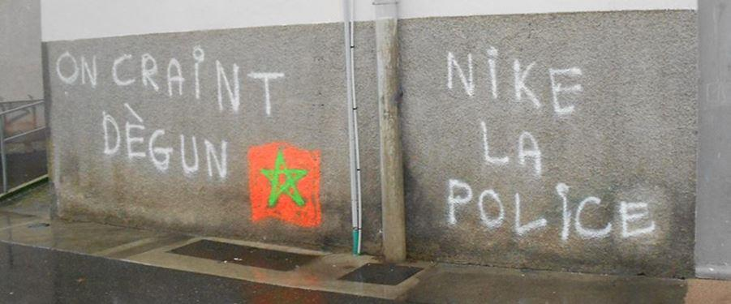

Au Canada au début du XXe siècle, les employeurs anglophones exhortaient leurs ouvriers québécois à « Speak White » : à parler anglais, la langue du colonisateur qui était aussi la langue du progrès, de l’argent, de l’innovation, du succès. À cette époque, les Canadiens français, perçus par leurs contremaîtres comme des arriérés, s’étaient laissés convaincre qu’ils étaient inférieurs sur les plans économique, culturel et linguistique. La langue française ne leur suffisait pas pour grandir et pour s’épanouir, puis s’y restreindre était synonyme d’une carrière ratée, d’une étroitesse d’esprit et d’une vie indigente. La mentalité du colonisé était profondément intériorisée, mais le Québec, par ses mouvements nationaliste et indépendantiste, a su dépasser cet épisode de son histoire nationale pour enfin revendiquer et défendre la langue française, cet héritage de la mère-patrie. Elle est devenue un symbole de résistance et il est possible désormais de vivre une vie prospère au Québec sans avoir à travailler, innover ou étudier en anglais malgré son isolement sur le continent américain.
En France, cependant, il semble que l’évolution soit inversée. La Sorbonne université s’est anglicisée ; la South Champagne Business School s’est rebaptisée pour plaire à une clientèle internationale et anglophone ; le PSG fait sa promotion uniquement en anglais ; la novlangue politiquement correcte et l’écriture inclusive érodent le français ; le gouvernement se plie à une Union européenne vendue à la langue anglaise ; puis, la Ville de Paris a choisi le slogan Made for sharing en vue des Jeux olympiques de 2024.
Non seulement la langue française ne suffit-elle plus en France même, on la barbarise pour se plier aux hommes d’affaires de la « start-up » supra-nation.
Le grand historien Fernand Braudel disait que « la France, c’est d’abord la langue française ». Osons ajouter que la langue française, c’est aussi et d’abord la France. La langue souffre puisque la patrie s’avilit, et les deux demeurent depuis toujours indissociables. S’il est excellent de promouvoir la langue française ailleurs dans le monde et si l’on doit tout à fait louanger son essor au Québec et au Sénégal, il est grand temps que la France reprenne aussi ses droits sur ce trésor qu’elle a tant de fois donné en partage.
Au risque d’être accusés d’impérialisme linguistique, les Français auraient intérêt à se réapproprier leur langue, « signe public de leur nationalité », comme l’aimait à le dire l’académicien Paul Hazard. Or, c’est justement le lien entre langue et identité nationale qu’on cherche à disloquer aujourd’hui en France. Dans son discours à l’Académie en 1985, l’écrivain Jean Dutourd avoua que « le bonheur de la langue française est que le peuple français l’a aimée aussi longtemps qu’il a aimé la patrie ». Aujourd’hui, le pays se laisse gagner par des mouvances anti-France et, parallèlement, le globish et le franglais ne s’en portent que mieux.
On sait que la langue française est depuis longtemps gangrenée par les idées et le lexique anglo-américains qui, à coups d’accords de libre-échange, l’ont soumise : réclamant que le français soit « avant tout une langue de traduction »1, le président Emmanuel Macron l’affichait courbé, plus propice au multiculturalisme et donc aux affaires. On se souvient aussi de son discours prononcé en anglais au Forum de Davos, sous prétexte que « c’est d’abord utile » et cela permettrait d’amener « ceux qui parlent anglais à la langue française ». Cette attitude de colonisé naïf qui veut à tout prix s’attirer les bonnes grâces de son maître avait déjà coûté très cher aux Québécois. Par ailleurs, on dit au Canada qu’il y a deux langues officielles : l’anglais et le traduit de l’anglais. Voyez la pente glissante sur laquelle descend la France « traductrice » : la nouvelle carte d’identité dite « nationale » / Identity Card est déployée depuis un certain temps. Le Québec est entouré d’anglophones et tout de même il n’oserait sans craindre une révolte populaire produire des cartes d’identité bilingues, et ce malgré un gouvernement encore plus fédérateur que celui de l’Union européenne pourtant libérée de l’Angleterre.
Le président de la République a dit qu’il était un « défenseur conquérant et ambitieux » de la langue française2, mais nous comprenons qu’il ne mérite ni l’une ni l’autre de ces épithètes. D’abord, la France ne s’est toujours pas dotée d’une loi ayant une vraie autorité en matière de défense linguistique (un Québécois s’étonne toujours des publicités affichées en anglais lors d’un voyage en terre de France, ce qui est illégal dans la Belle Province), car la loi Toubon est devenue obsolète. Elle manque aussi cruellement d’ambition. Faut-il rappeler que traduire n’est pas créer ? Les Français doivent se souvenir qu’il est possible, souhaitable et essentiel d’inventer en français, et c’est là la définition du génie qui était longtemps le leur.
Mais le président de la République va plus loin encore. Dans tous ses discours depuis l’Institut de Paris jusqu’à Erevan, il dit vouloir « émanciper » la langue française et nous serions portés à croire qu’elle est prisonnière. Louise Mushikiwabo, secrétaire générale de l’Organisation internationale de la Francophonie, partage la même idée : la francophonie « n’est pas un pays » et « ne s’identifie pas non plus au passé de la France »3.
La langue doit être délivrée de son terroir. Pour sa part, l’académicienne Barbara Cassin croit qu’il n’existe pas une langue française, mais « des français qui composent quelque chose comme la langue française »4. Comprenons-nous bien, il est merveilleux que le français se répande de par le monde et par le biais des enfants dont elle a accouché. Mais, alors que la France doit en demeurer la boussole, on voudrait lui nier toute association identitaire et tout génie national sous couvert d’une francophonie nébuleuse, déracinée et prudemment postcoloniale.
Après avoir fait le tour du monde prétextant le développement économique, avoir côtoyé le plurilinguisme et être devenue une « langue monde » à l’image de citoyens hors sol et sans repères, la langue française nous revient désincarnée et écartelée. Non, l’épicentre du français ne se situe pas « dans le bassin du fleuve Congo » rêvé par le président de la République, tout comme il ne se situera jamais à Bruxelles, à Montréal, à Dakar, à Hanoï, ou à Bucarest. La langue, comme l’homme, a droit à une souche et c’est la France qui, depuis les Serments de Strasbourg, la nourrit de sa sève.
Pourtant, c’est en mai 2020 que le président Macron annonçait l’enseignement de l’arabe dans les écoles françaises, puisque cela représenterait « une chance pour la France » et combattrait le prosélytisme. Il oublie que la foi musulmane se vit et se transmet par l’arabe, et l’Oumma sans frontières n’en serait que plus élargie dans sa visée à la fois communautariste et internationale. Mais faut-il en être surpris ? L’arabe « dialectal » est reconnu « langue de France » par l’Union européenne depuis 1999 et par la Délégation générale à la langue française du ministère de la Culture depuis 2016. C’est la fracture de l’union et de l’identité nationale française en œuvre, car les langues étrangères promues officiellement sans hiérarchisation confortent le sentiment binational : avec le dédoublement de la langue, il y a dédoublement de l’identité. Si l’on est bilingue français-arabe, l’on s’identifiera plus souvent en tant que Franco-Marocain ou Franco-Algérien plutôt que Français, tout court. Cautionnées par la mondialisation et la bien-pensance, les grandes organisations de la francophonie veulent nous voir batifoler avec le plurilinguisme ; or dans le seul pays du monde où le français est l’unique langue officielle, il faut pouvoir dire que celle-ci n’est pas une option parmi d’autres.
Revenons-en à Paul Hazard qui, déjà en 1912, avait diagnostiqué le vrai problème : « Le grand danger n’est pas la crise du français ; c’est la crise de la France ». Comment un étranger peut-il apprendre à aimer la France et sa langue alors que son propre chef la décrit, tout bonnement, comme « un pays parmi d’autres », puis qu’il faut s’enorgueillir de ce « décentrement »5 ? Pourquoi ne nous indignons-nous pas devant un président de la République française qui ne dit pas de son pays qu’il est le plus beau du monde, et de sa langue qu’elle est la plus belle ? Tous se souviennent qu’il avait nié à la France une culture propre, ce n’est donc pas surprenant s’il cherche à détacher le fait français de la patrie. Devant tant d’effacement et de courbettes, l’étranger n’y verra rien à défendre ou à respecter ; il ne lui restera que le mépris.
Pour y répondre, il faut de l’exigence, encore de l’exigence, et toujours de l’exigence. La langue française nous enjoint à des devoirs moraux. La France n’a pas marchandé sa langue comme l’a fait l’Angleterre, elle ne l’a pas utilisée aux fins de conversion des âmes comme l’ont fait les Arabes – elle en a fait une offrande : aux peuples qu’elle fît connaître la pensée libre parce que claire, l’égalité qui élève plutôt qu’elle ne nivelle, et la fraternité qui ne doit rien à l’inclusivité woke, elle a insufflé ce goût d’audace et d’émancipation.
Mais la langue française nous enjoint également à des devoirs d’esthétique : elle doit non seulement être compréhensible et juste, elle doit aussi être belle. C’est une Précieuse qui, quand elle brille et quand elle est universelle, ne tolère ni la paresse ni la platitude. Elle souffre mal les hésitations et les balbutiements. Elle boude les raccourcis et l’argot ne l’impressionne guère. Il faut être galant avec notre langue, en la confrontant à un minimum de hardiesse tout en faisant preuve de retenue. Tout un chacun a son patois régional, mais il faut aussi, en dehors de la sphère intime, s’incliner devant le corset de ses caprices, ses règles et ses exceptions.
Alain Borer a raison en signalant que la langue française n’est pas « exactement menacée de disparition, mais elle est exposée au risque de s’effondrer en français pourri, en une sorte de dialecte de l’empire anglo-saxon » ; et pour un peuple dont l’honneur fut depuis toujours la valeur première, il n’y a rien de plus néfaste que cette médiocrité. La France est à l’image de sa langue et toutes deux sont usées par le désamour et le doute. Il devient évident que le meilleur allié de la langue française, pour le plus grand bonheur du monde francophone et au-delà, est ce Français qui, pour paraphraser Paul Déroulède, aimant sa patrie plus que les autres patries, et aimant sa langue plus que les autres langues, collaborera à leur redressement.
M. C-D.
NOTES ET RÉFÉRENCES
1. « Discours d'Emmanuel Macron à l'Institut de France sur l'ambition pour la langue française et le plurilinguisme », 20 mars 2018.
2. Énoncé lors d’une rencontre avec le premier ministre québécois Philippe Couillard, à Paris, le 5 mars 2018.
3. En préface de l’ouvrage « Francophonie, pour l’amour d’une langue », publié chez Nevicata, juillet 2020.
4. En préface de l’ouvrage « Francophonie, pour l’amour d’une langue », publié chez Nevicata, juillet 2020.
5. « Discours d'Emmanuel Macron à l'Institut de France sur l'ambition pour la langue française et le plurilinguisme », 20 mars 2018.
Partager cette page